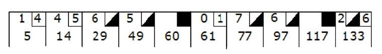

A triangle can be classified across a few dimensions, one of which is based on the lengths of its sides.
A triangle is scalene if all of its three sides are different.
If two of its sides are equal, a triangle is called isosceles.
A triangle with all three equal sides is called equilateral.
Create a class TriangleClassifier with the following method:
In addition, the classify method should perform error checking if the given lengths of the sides cannot correspond to a real triangle. In this case, it should raise the error ArgumentError.
The following description of the Bowling Kata is taken from Uncle Bob Martin's original description of the kata, available at his site.

A game of bowling consists of 10 frames. In each frame the player has two opportunities to knock down 10 pins. The score for the frame is the total number of pins knocked down, plus bonuses for strikes and spares.
A spare is when the player knocks down all 10 pins in two tries. The bonus for that frame is the number of pins knocked down by the next roll. So in frame 3 above, the score is 10 (the total number knocked down) plus a bonus of 5 (the number of pins knocked down on the next roll.)
A strike is when the player knocks down all 10 pins on his first try. The bonus for that frame is the value of the next two balls rolled.
In the tenth frame a player who rolls a spare or strike is allowed to roll the extra balls to complete the frame. However no more than three balls can be rolled in tenth frame.
Write a class named Game that has two methods:
The Roman Numeral Calculator problem in this form was originally laid out as part of the Ruby Quiz series. See the original problem Ruby Quiz 22.
The goal of this exercise is to create a a utility that accepts an integer (between 1 and 3999) expressed as an Arabic or Roman numeral and returns the same value in the opposite format.
For example, the following sequence of inputs:
III
29
38
CCXCI
1999
would yield the following outputs:
3
XXIX
XXXVIII
291
MCMXCIX
If you're not familiar with or need a refresher on Roman numerals, the rules are fairly straightforward. First, there are seven letters associated with seven values:
I = 1
V = 5
X = 10
L = 50
C = 100
D = 500
M = 1000
You can combine letters to add values, by listing them largest to smallest from left to right:
II is 2
VIII is 8
XXXI is 31
However, you may only list three consecutive identical letters. That requires a special rule to express numbers like 4 and 900. That rule is that a single lower value may proceed a larger value, to indicate subtraction. This rule is only used to build values not reachable by the previous rules:
IV is 4
CM is 900
But 15 is XV, not XVX.
Create a class RomanNumeralCalculator with the following method:
In order to gain clearance to the super-secret area of the mad scientist's lab, you must crack the security code sequence randomly generated at the start of each day. The code is breakable, but you'll need to practice if you're going to crack it quickly enough to not get caught.
The security code consists of a sequence of four colors, each element of which will be one of the following: Red, Orange, Yellow, Green, Blue, Violet, Pink, or Chartreuse. Duplication is allowed.
Upon entering sequence of four colors as a guess, the system will respond by indicating how many colors were correct but out of sequence and how many colors were both correct and in the correct spot in the sequence.
For example, if the correct sequence of colors is RGBP, and the guess is GYBO then then response will indicate that one color was guessed correctly but out of place (G) and one color was guessed correctly and in the correct spot (B).
This repeats until the full sequence has been entered correctly or the evil scientist discovers you and… deals with you.
See an online example here.
Create a class CodeBreakerSimulator with the following method:
This simulator should be able to help you practice your color sequence cracking and hopefully avoid being caught in a mad scientist's lair! Good luck, we're all counting on you.
The following description of the rules of Greed is taken from the Wikipedia article here: Greed Scoring.
Greed is a dice game with complex scoring rules. The first player to have scored 10,000 or more points at the end of their turn wins.
A turn involves one or more throws of the dice.
When a player begins a turn, he throws all six dice. He then scores points for the turn (cumulatively) as per scoring below. If he fails to score any points on any given throw, he receives no points for his turn, his turn ends, and play passes to the person on his left. After each throw, the player sets aside any of the dice that scored points, and he may either continue to throw the rest of the dice or end his turn and take his points. The player then continues to throw all remaining non-scoring dice until:
In addition, if a player scores with all six dice over the course of his turn, he may continue rolling, starting again with six dice.
In order to enter the game, a player must achieve 1000 points in one turn (not throw).
| Dice | Scores |
| a single 1 | 100 |
| a single 5 | 50 |
| triple of 1's (1,1,1) | 1,000 |
| triple of 2's (2,2,2) | 200 |
| triple of 3's (3,3,3) | 300 |
| triple of 4's (4,4,4) | 400 |
| triple of 5's (5,5,5) | 500 |
| triple of 6's (6,6,6) | 600 |
| four-of-a-kind (2,2,2,2) | Multiply triple score by 2 |
| five-of-a-kind (3,3,3,3,3) | Multiply triple score by 4 |
| six-of-a-kind (4,4,4,4,4,4) | Multiply triple score by 8 |
| three pairs (2,2,3,3,4,4) | 800 |
| straight (1,2,3,4,5,6) | 1,200 |
If you set aside a triple of 5's, then rolled a single 5, you could not claim a four-of-a-kind. You could merely claim one triple of 5's, and one single 5. Your score would be 500 + 50 = 550.
When rolling 4 or greater of a kind, each additional kind that is matched doubles your score. So if you rolled five 4's, your score would be 400 for the first 3. Then double that for the fourth, making it 800, then double again to make it 1600 points. 400x2x2 = 1600.
Create a class GreedScorer with the following method:
This method accepts a sequence of 0 to 6 dice values and returns the score for that roll, according to the chart above.
For Example
scorer = GreedScorer.new
scorer.score([]) # returns 0 (no score)
scorer.score([1]) # returns 100 (100 for the 1)
scorer.score([3,1,2,1,6,5]) # returns 250 (200 for the two 1s + 50 for the 5)
scorer.score([3,3,3,3,3,2]) # returns 1200
# (300 for triple score, X4 for 5 of a kind)
Create a tracker for a Greed game sequence. This is an open-ended problem. You may choose to focus on scoring individual throws, combining throws into rounds, tracking multiple players, or whatever palatable and interesting portion of the solution you choose.
Hi and welcome to team Gilded Rose. As you know, we are a small inn with a prime location in a prominent city ran by a friendly innkeeper named Allison. We also buy and sell only the finest goods. Unfortunately, our goods are constantly degrading in quality as they approach their sell by date. We have a system in place that updates our inventory for us. It was developed by a no-nonsense type named Leeroy, who has moved on to new adventures. Your task is to add the new feature to our system so that we can begin selling a new category of items. First an introduction to our system:
Pretty simple, right? Well this is where it gets interesting:
We have recently signed a supplier of conjured items. This requires an update to our system:
Just for clarification, an item can never have its quality increase above 50, however "Sulfuras" is a legendary item and as such its quality is 80 and it never alters.
Construct a class GildedRose with the following method:
The basic form of Sudoku challenges the player to fill a nine-by-nine grid with the digits 0-9 such that each row, column, and block contains each digit (and thus no repetition). There are nine blocks in the standard grid, each a three-by-three subsection of the larger grid, as depicted in the accompanying image.
Sudoku puzzles are constructed with some portion of their cells already filled with digits, constraining the solution set. In general, there are many solutions for a given board.
For further description of the rules of Sudoku reference the Wikipedia article.
Construct a solver which accepts a given starting grid and produces a solved grid based on the starting state. This problem is amenable to brute force as well as numerical methods. Though there is a list of algorithmic solutions on Wikipedia, brute force is probably the most reasonable approach given time constraints.